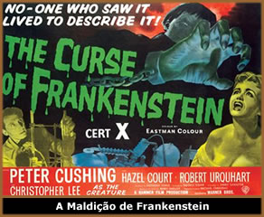
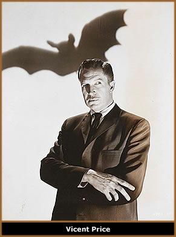

No final dos anos 1950 e durante toda a década
seguinte, o cinema de horror foi atraído para diversas
direções, entre elas a evolução
do novo cinema gótico, representado principalmente
pela britânica Hammer Films e a americana
A.I.P. (destacando-se o ciclo de filmes de Roger
Corman adaptados da obra de Edgar
Allan Poe).
Pequena
companhia, a Hammer conheceu o sucesso comercial com algumas
produções de ficção científica
bem acima da média do que se fazia no período.
Graças ao sucesso de Terror que Mata (The
Quatermass Xperiment/1955) a Hammer direcionou a sua
produção para os filmes de terror, revitalizando
nas telas os velhos monstros da Universal, iniciando
com A Maldição de Frankenstein (The Curse
of Frankenstein - 1957) e O Vampiro da
Noite (Dracula - 1958). A diferença,
porém, é que o horror antes sugerido ficou
mais explícito, com a abundância do vermelho
technicolor do sangue.
É interessante perceber em como,
em tão pouco tempo, o gênero se modificou –
resultado claro de uma nova forma de abordagem por parte
de novos diretores, assim como de segmentos da indústria
e as novas tendências do público. O fato é
que após sua estréia triunfal no final dos
anos 50, inaugurando o filão do horror britânico
nas telas, a Hammer atravessou as décadas seguintes
em processo de morte lenta.
A Hammer fez escola à partir de sua
revisão dos monstros da Universal. Sua Maldição
de Frankenstein possui todos os elementos já
conhecidos da história. O problema é que até
hoje, nenhum filme sobre a criatura conseguiu se aproximar
da obra de James Whale, com sua fotografia em branco e preto,
cenografia de influência expressionista e um monstro
que passou a fazer parte do imaginário coletivo.
A Maldição de Frankenstein, sucesso
de público na Inglaterra e EUA, após ser distribuído
pela Warner, já mostrava as sementes do que se tornaria
uma estética: mais dinamismo, violência explícita,
mulheres insinuantes e erotismo, além de sets reproduzindo
com material barato as aldeias e vilas da Europa Central
do século XIX, com castelos, carruagens e tavernas.
A diferença mais marcante no Frankenstein da Hammer
foi a inversão de enfoque, priorizando o cientista
e deixando a criatura em segundo plano.
O Vampiro da Noite, feito em seguida,
é superior ao Drácula de Tod Browning.
E Christopher Lee, seu intérprete, mais aterrador
e sensual do que poderia sugerir a inexpressiva figura de
Bela Lugosi, com seus gestos teatrais. O Vampiro da
Noite foi a consolidação financeira e
de público da Hammer. Diferente do filme de Browning,
o enfoque é carregado de sexualidade. O Drácula
de Lee encarna a própria maldade e perversão,
ostentando lascivo grandes presas pontudas. Suas vítimas
femininas, vestidas em corpetes decotados que deixavam os
seios quase a mostra, morrem ofegantes, com erótico
entusiasmo durante a mordida fatal, numa personificação
de eros e thanatos: o orgasmo na hora da morte, tema que
se tornaria recorrente nos filmes de horror.
Por outro lado, nos Estados Unidos, a A.I.P.
(American International Pictures) iniciava os dias
do drama de horror gótico, orquestrado pelo, mais
tarde conhecido, "rei dos filmes B" Roger Corman.
Produtora especializada no filão exploitation,
acompanhava as tendências do mercado, produzindo filmes
baratos que exploravam os assuntos em voga, em geral destinados
ao público jovem, como delinquência juvenil
e conflitos de gangues. Portanto não é de
estranhar o seu direcionamento para o horror, já
na década de 50 com os citados filmes B de monstros
e insetos. Isso somado à concorrência de outros
produtores de filmes exploitation que cada vez mais disputavam
fatias de seu mercado e a óbvia influência
do sucesso dos filmes da Hammer.
Graças
a Corman, os monstros deram lugar a indivíduos neuróticos
e torturados, vagando melancólicos e amargurados
por mansões lúgubres que guardavam aterrorizantes
segredos. O horror deixa de ser palpável e previsível,
tornando-se uma força ancestral de dimensões
cósmicas. Rejeitando em parte o maniqueísmo
presente na maioria dos filmes de horror, inclusive nos
da concorrente britânica, ou seja, a eterna luta entre
o bem e o mal, em que o primeiro invariavelmente vence,
Corman buscou em Freud uma base psicológica para
seus personagens. O bem e o mal não eram mais tão
distintos assim, apesar dos filmes sempre caminharem para
a redenção ou purgação. Não
foi por acaso, portanto, que a base desse ciclo de oito
filmes que dirigiu entre 1960 e 1964 e caracterizou o gótico
americano nas telas foi adaptado da obra do escritor Edgar
Allan Poe – e posteriormente H.P.
Lovecraft, seu principal intérprete Vincent
Price e as cores predominantes (em oposição
aos vibrantes vermelhos da Hammer) os azuis e verdes Pathecolor,
ressaltando o ambiente mórbido e decadente daquelas
produções. O sexo se insinua, ganhando novos
significados. Não mais o enlace fatal, em que a vítima
sucumbe em um ritual de prazer ao seu algoz, mas ao sexo
além da morte, do culto à necrofilia e da
paixão eterna que corrói e volta como um espectro
assustador.
Sendo assim não poderia ter sido
mais coerente a escolha de Poe, com sua concepção
de um horror que nos rodeia e também está
dentro nós mesmos, carregado de perversão,
morbidez e degenerescência. Concepção
que está presente em Solar Maldito (House of
Usher, 1960), o primeiro filme do ciclo, em
que um irmão, sua irmã gêmea e o antigo
casarão que habitam compartilham uma única
alma e encontram uma dissolução comum na mesma
hora.
A A.I.P. também foi responsável
pela distribuição do filme que podemos considerar,
mais do que um ponto alto do terror gótico dos anos
60, um marco do cinema de horror. Black Sunday (La Maschera
del Demônio - 1960) o melhor trabalho do diretor
italiano Mario Bava e um dos mais atmosféricos
e assustadores filmes já feitos.
Black Sunday possui todos os elementos que,
a grosso modo, caracterizam um filme como gótico:
o castelo lúgubre com suas alas abandonadas ou em
ruínas, corredores úmidos, catacumbas, lendas
tenebrosas e maldições ancestrais. Além
de vilões perversos, da jovem inocente vítima
maior dos horrores e o herói – na verdade o
representante do bem que vai lutar contra as forças
do mal desencadeadas.
Por
Lucio Reis
Extraído
de http://cinemapoeira.blogspot.com